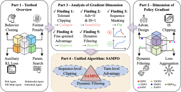
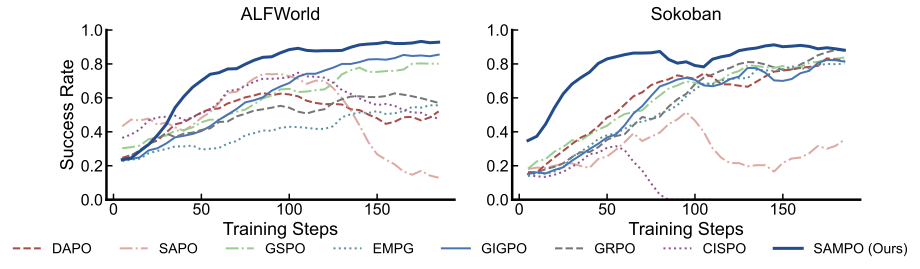
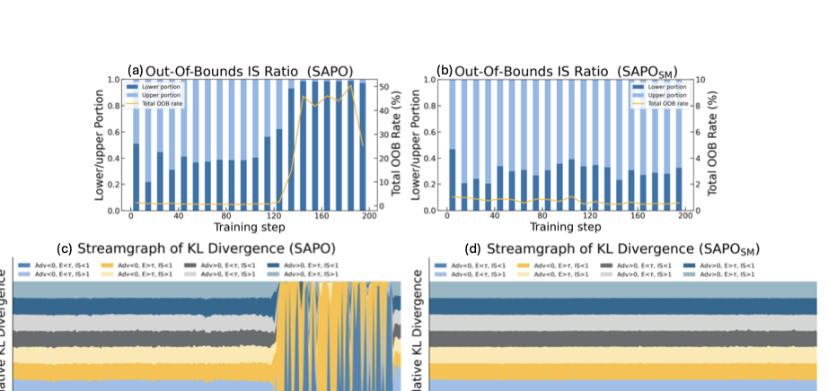

智能体强化学习（Agentic Reinforcement Learning, ARL）作为一种有前景的范式，近年来在训练智能体解决复杂多步交互任务方面获得了广泛关注。然而，尽管早期结果令人鼓舞，ARL训练仍然高度不稳定，经常导致训练崩溃。这种不稳定性限制了向更大环境和更长交互horizon的扩展，也制约了算法设计选择的系统探索。
本文首先提出ARLArena，这是一个稳定的训练方案和系统性分析框架，在可控且可复现的环境中考察训练稳定性。ARLArena首先构建了一个干净、标准化的测试平台。然后，我们将策略梯度分解为四个核心设计维度，并评估每个维度的性能和稳定性。通过这种细粒度的分析，我们提炼出ARL的统一视角，并提出SAMPO（Stable Agentic Multi-turn Policy Optimization），这是一种稳定的智能体策略优化方法，旨在缓解ARL中不稳定性的主要来源。
实证结果表明，SAMPO在各种智能体任务中实现了一致稳定的训练和强劲的性能。总体而言，本研究为ARL提供了一个统一的策略梯度视角，并为构建稳定且可复现的LLM智能体训练流程提供了实践指导。
| 项目 | 内容 |
|---|---|
| 论文 ID | 2602.21534 |
| 标题 | ARLArena: A Unified Framework for Stable Agentic Reinforcement Learning |
| 作者 | Xiaoxuan Wang, Han Zhang, Haixin Wang, Yidan Shi, Ruoyan Li, Kaiqiao Han, Chenyi Tong, Haoran Deng, Renliang Sun, Alexander Taylor, Yanqiao Zhu, Jason Cong, Yizhou Sun, Wei Wang |
| 单位 | University of California, Los Angeles; University of Wisconsin--Madison |
| 会议 | 论文预印本 (arXiv) |
| 原文保存位置 | ~/.openclaw/workspace/papers/20260309_Transformers/source/ |
| 报告生成日期 | 2026-03-09 |
大型语言模型（LLMs）正越来越多地被部署为自主智能体，用于解决复杂的多步交互任务，涵盖网页导航、具身环境、游戏和深度研究等领域。这些任务需要规划、工具使用和长期决策制定，这使得训练目标能够捕捉多轮交互变得必要。强化学习（RL）为这一目的提供了一个原则性的后训练框架，其在静态推理任务中已取得成功（如DeepSeek-R1、OpenAI o1），并且在智能体设置中的早期结果也很有前景。
然而，智能体RL（ARL）训练仍然高度不稳定，容易崩溃。这种不稳定性源于智能体环境的交互式、多轮性质带来的复合挑战，例如无效动作、稀疏奖励、长期信用分配和非平稳的智能体-环境动态。早期决策中的微小偏差可能会在多轮中累积，导致分布偏移，从而放大信用分配噪声并产生退化 rollout。因此，ARL结果在不同的运行和环境之间难以预测和复现，向更长horizon或更复杂交互空间的扩展仍然受到严重限制。这些挑战突出了对稳定和可扩展的ARL训练解决方案的迫切需求。
本文通过引入ARLArena（一个用于智能体强化学习的稳定训练方案和系统性分析框架）来解决这一空白。我们首先通过格式校正、行为克隆初始化和基于KL的正则化构建一个干净、标准化的测试平台，建立可靠的基线性能。然后，我们将基于策略梯度的RL分解为四个正交设计维度，并在各种智能体任务中评估每个维度的有效性和稳定性。每个维度都使用代表性的策略优化（PO）方法进行单独研究；对于表现出训练崩溃的方法，我们进一步诊断其底层失败模式并开发有针对性的稳定化策略。
这种系统性分析产生了三个关键发现：
基于这些见解，我们提出了SAMPO（Stable Agentic Multi-turn Policy Optimization），这是一个统一的PO方法，直接解决了我们分析中识别的 instability 的主要来源。SAMPO始终如一地改进训练稳定性和性能，在GRPO基线的基础上实现了平均25.2%的改进。我们还研究了智能体环境中离线策略陈旧性的影响，并进行了与专有模型的比较评估，证明了我们的方法的鲁棒性和通用性。
主要贡献总结：
在LLMs的RL优化过程中，策略 $\pi_\theta$ 生成一个以提示 $x$ 为条件的响应轨迹 $y = (y_0, \dots, y_T)$，随后用于策略更新。遵循PPO风格的优化，在行为策略 $\pi_{\theta_{\mathrm{old}}}$ 下收集的轨迹用于更新当前策略 $\pi_\theta$。相应的策略梯度可以写成：
$$ \nabla_\theta \mathcal{L}(\theta) = \mathbb{E}_{y \sim \pi_{\theta_{\texttt{old}}}} \Bigg[ \sum_{t=0}^{T} w_t(y) \nabla_\theta \log \pi_\theta(y_t \mid x, y_{<t}) \; A(x,y) \Bigg] $$其中重要性采样权重为：
$$ w_t(y) = \frac{P_\theta(y_t \mid x, y_{<t})}{P_{\theta_{\texttt{old}}}(y_t \mid x, y_{<t})} = \frac{ \pi_\theta(y_t \mid x, y_{<t}) }{ \pi_{\theta_{\texttt{old}}}(y_t \mid x, y_{<t}) }. $$这里 $A(x,y)$ 表示采样序列的优势。
智能体与环境进行$K$轮交互，形成长期决策过程。在每轮中，策略以累积的历史为条件生成响应，从中提取动作并在环境中执行，导致环境状态转换。
初始用户提示为 $x^{(1)}$。在第 $k \in \{1, \dots, K\}$ 轮，策略生成响应 $y^{(k)} \sim \pi_\theta(\cdot \mid x^{(k)})$。给定环境状态 $s^{(k)}$，动作 $a^{(k)}$ 从 $y^{(k)}$ 中提取，环境根据更新函数 $f$ 转换到下一个状态 $s^{(k+1)} = f\!\left(a^{(k)}, s^{(k)}\right)$，其中 $f(\cdot)$ 是包含工具调用、环境观察或检索信息的状态转换函数。第 $k+1$ 轮的用户提示 $x^{(k+1)}$ 由更新后的状态 $s^{(k+1)}$ 构造。最终，完整的多轮交互轨迹定义为 $\tau = \bigl(x^{(1)}, y^{(1)}, x^{(2)}, y^{(2)}, \dots, x^{(K)}, y^{(K)}\bigr)$。
在上述多轮智能体-环境设置中，我们将$K$轮轨迹分解为单轮更新，得到智能体LLM交互的以下策略梯度公式：
$$ \nabla_\theta \mathcal{L}(\theta) = \color{purple} \mathbb{E}_{\tau\sim\pi_{\theta_{\texttt{old}}}} \color{black} \Big[ \color{black} \sum_{k=1}^{K}\sum_{t=0}^{T_k} \color{violet} \underbrace{w_t(y^{(k)})}_{\text{IS}} \color{cyan} \underbrace{ \nabla_\theta \log \pi_\theta\!\left( y^{(k)}_t \mid x^{(k)}, y^{(k)}_{<t} \right) }_{\text{Log prob}} \color{black} \, \color{ForestGreen} \underbrace{ A(x^{(k)},y^{(k)}) }_{\text{Advantage}} \color{black} \Big]. $$根据上述公式，智能体LLMs的策略梯度公式可以分解为四个关键研究维度：
为了独立研究每个维度，我们分析了批次级别的损失目标，下表总结了不同设计维度的代表性PO算法。
构建公平有效的算法比较测试平台是一个主要挑战。为了解决这个问题，我们逐步应用一系列稳定化策略：
行为克隆（Behavior Cloning）：首先在监督交互轨迹上执行行为克隆，将策略初始化到合理的行为流形中。具体来说，我们通过在目标训练环境中部署Qwen3系列模型，收集自生成的交互轨迹，并仅保留高分rollout进行监督，构建了一个多轮SFT数据集。
格式惩罚（Format Penalty）：我们引入 $\mathcal{R}_{\text{format}}$ 来强制结构化输出，要求明确的 <think> </</think>> 和 <action> </action> 标签。如果生成的输出违反格式（例如，缺少标签、格式嵌套混乱或标签外的内容），我们将对最终奖励应用固定惩罚。
辅助KL损失：不受约束的更新可能导致策略过度偏离参考模型。为了正则化策略更新并保留基础模型中嵌入的预训练知识，我们在当前策略 $\pi_\theta$ 和参考策略 $\pi_{\mathrm{ref}}$ 之间引入KL散度惩罚。
PO特定超参数网格搜索：确保每种PO方法在多轮设置中得到公平评估的解决方案是：首先使用其默认配置运行每种方法，然后执行PO特定的超参数网格搜索。
我们采用ALFWorld、WebShop、Sokoban和TIR Math作为智能体任务。整个代码库基于verl RL框架构建。我们使用agentic-loop架构来协调rollout和环境交互，然后将每个完整轨迹分割为多个单轮样本用于策略优化。对于数学任务，我们使用Qwen3-4B-base作为策略模型；对于所有其他任务，我们从SFT调整的变体Qwen3-4B初始化。
我们沿IS维度研究GSPO、CISPO和SAPO。GSPO采用序列级裁剪，而CISPO和SAPO采用容错裁剪技术。对于CISPO和SAPO，我们进一步应用序列掩码（表示为 $\text{CISPO}_{\texttt{SM}}$ 和 $\text{SAPO}_{\texttt{SM}}$）以提高训练稳定性。
表结果表明，CISPO和SAPO在所有任务上的表现都显著不如GRPO，平均分数分别为34.03和32.22，而GRPO为46.16。相比之下，GSPO始终优于所有其他PO方法，与GRPO相比平均提高13.3%。
训练动态分析：CISPO和SAPO具有容错裁剪，表现出快速的初始性能提升。这种行为表明更积极的优化。然而，这种激进导致训练不稳定，约在130步左右发生崩溃。相比之下，GSPO表现出更稳定的训练模式，性能逐步提升，KL散度和梯度范数保持稳定。
发现1：ARL对IS设计高度敏感：容错裁剪产生快速早期收益但导致训练崩溃，而序列级裁剪确保稳定的改进。
训练崩溃的根本原因：为了研究沿IS维度训练崩溃的根本原因，我们分析了SAPO及其序列掩码变体的令牌级重要性采样比率统计。分析表明，在崩溃阶段，SAPO表现出快速增长的超界令牌数量，主要来自具有小重要性比率的负优势序列（低界部分）。相比之下，对于稳定训练，超界令牌的比例保持相当低。这表明具有低IS比率的负优势样本是观察到的训练不稳定性的主要贡献者。
发现2：训练崩溃主要由具有低IS比率的负优势序列的累积驱动。对此类序列进行序列掩码可以稳定训练。
我们沿优势设计维度研究GIGPO和EMPG。GIGPO结合了来自环境的全局和局部优势信息，实现细粒度优势估计，而EMPG通过包含训练数据中的不确定性信息来重塑优势。
表显示GIGPO通常优于GRPO，平均分数为49.71，而GRPO为48.08，在ALFWorld上特别有34.4%的显著提升。此外，EMPG表现出任务依赖的性能，在WebShop上成功率提高11.5%，而在ALFWorld上下降7.1%，导致与GRPO的平均分数差异为0.1。
发现3：在ARL中结合细粒度环境优势提高了性能。
动态过滤在数学推理任务中已知能带来强劲的性能提升。然而，我们发现这些收益并不总是能转移到智能体强化学习设置中。
表显示，动态过滤与GIGPO结合时比与GRPO结合时更一致地提高性能。这种差异源于动态过滤如何与格式学习交互。在训练早期，许多rollout组完全由于格式错误而失败，这放大了格式惩罚并为格式校正产生了强烈的隐式优势信号。
发现4：GIGPO的动态过滤有助于ARL的训练稳定性和性能。
如表所示，序列-均值-令牌-均值损失聚合（$\text{GRPO}_{\texttt{ST}}$）相对于令牌-均值聚合（GRPO），性能从46.16下降到39.23。
通过系统分析ARL中正交设计维度的PO，我们确定了决定训练稳定性和优化效率的关键因素。
基于这一统一理解，我们提出了SAMPO，这是一种基于这些原则的新PO范式。SAMPO将序列级裁剪、细粒度优势估计和动态过滤整合到一个统一的框架中，为ARL提供一个稳定且可扩展的解决方案。它被表述为：
$$ \mathcal{L}(\theta) = \frac{1}{\sum_{i=1}^{N} T_i} \sum_{i=1}^{N}\sum_{t=0}^{T_i-1} \min\Big( s_i(\theta)\,A_i^{'},\; \mathrm{clip}\big(s_i(\theta),1\!\pm\!\varepsilon\big)\,A_i^{'} \Big), \\ \text{s.t.}\quad 0 < \left| \left\{ y \;\middle|\; \mathrm{is\_equivalent}(a, y) \right\} \right| < G. $$其中 $A_{i,k}^{'}=A_i+\omega\cdot A_{\tiny\text{step}}(\hat{y}_{i,k})$, $s_i(\theta)= \exp!\Big( \frac{1}{|T_i|} \sum_{t=0}^{|T_i|-1} \log \frac{\pi_\theta(y_{t}\mid x, y_{<t})} {\pi_{\theta_{\texttt{old}}}(y_{t}\mid x, y_{<t})} \Big)$。
在所有评估的智能体任务中，SAMPO始终如一地实现最强的整体性能。与仅修改一个维度的方法相比，SAMPO表明结合多个设计维度对于稳定和有效的ARL是必要的。
为了进一步将SAMPO的性能置于上下文中，并评估经过稳定RL训练的小型开源模型是否能与前沿的闭源模型和复杂的多智能体工作流竞争，我们将ARLArena与前沿闭源模型进行基准测试。
我们评估了GPT-5.2、o3和Gemini 2.5 Pro在ALFWorld和WebShop上的表现，考虑两种主要范式：
经过SAMPO后训练的Qwen3-4B在ALFWorld上实现了92.72%的全任务成功率，显著优于GPT-5.2（51.56%）和基于o3的MAS（56.25%）。这表明规模复杂的推理无法替代稳定、环境对齐的ARL训练。
基于我们对ARL中策略梯度设计选择的系统分析，我们确定了几个值得深入探索的有前途的方向：
（1）清洁训练方法是复杂推理的基础 ARLArena揭示了ARL对初始化和早期训练动态非常敏感。精心构建的清洁设置结合短期监督冷启动SFT、格式强制结构约束和保守KL正则化，对于解锁稳定的多轮推理行为至关重要。
（2）IS裁剪高度敏感，而优势设计提供相对稳定的收益 在我们检查的策略梯度维度中，IS裁剪策略表现出高敏感性：裁剪阈值或比率参数化的微小变化会极大地影响稳定性。相比之下，优势设计往往在任务中提供更稳定但相对较小的改进。
（3）稳定的ARL解锁长期扩展机会 一旦训练崩溃得到缓解，我们观察到智能体策略可以在显著更多的优化步骤中保持性能改进而不会退化。
本文系统分析了策略梯度设计选择如何影响多轮环境中智能体LLMs的训练稳定性。ARLArena证明序列级裁剪对稳定性至关重要，而优势设计和动态过滤提供较小但一致的收益，损失聚合影响有限。基于这些见解，我们引入了SAMPO，这是一个统一的策略优化框架，实现了稳定有效的智能体RL训练。总体而言，本研究强调了原则性策略设计对于推进ARL的重要性。
系统性的分析框架（ARLArena）：本文首次提出了一个统一的框架来系统性地分析智能体强化学习中的训练稳定性问题，将策略梯度分解为四个正交维度（损失聚合、IS裁剪、轨迹过滤、优势设计），为后续研究提供了方法论基础。
关键发现：通过大量实验验证，揭示了三个重要发现：
SAMPO方法：提出的SAMPO方法成功融合了多个稳定化策略，在多个智能体任务上取得了显著的性能提升。
环境覆盖有限：实验仅在ALFWorld、WebShop、Sokoban和TIR Math四个环境中进行，可能无法完全代表更广泛的智能体应用场景。
模型规模：主要使用Qwen3-4B模型进行实验，未在大规模模型上验证方法的通用性。
超参数敏感性：尽管文中进行了超参数搜索，但某些关键超参数（如裁剪阈值）的选择仍然对结果有显著影响。

图1：ARLArena概述。第一部分：通过行为克隆、格式惩罚、KL正则化和超参数搜索构建标准化测试平台。第二部分：将策略梯度分解为四个维度，并映射每个维度的代表性方法。第三部分：关于训练稳定性和崩溃模式的关键发现。第四部分：将见解统一到SAMPO中，实现稳定的ARL训练。
:::

图2：ALFWorld（左）和Sokoban（右）上的训练曲线。SAMPO（ ours）在两个环境上都实现了最高的成功率，训练过程稳定且单调提升，而基线方法表现出不同程度的 不稳定性。
:::
图3：六种IS变体在ALFWorld上的训练动态：GRPO、GSPO、SAPO、CISPO及其序列掩码对应物 $\text{SAPO}_{\texttt{SM}}$ 和 $\text{CISPO}_{\texttt{SM}}$。面板从左到右显示：成功率、新旧策略之间的离线策略KL散度、新策略和参考策略之间的KL损失、梯度范数、以及rollout动作令牌的合法格式比例。
:::

图4：SAPO及其序列掩码变体 $\text{SAPO}_{\texttt{SM}}$ 的令牌级和序列级IS分析。(a, b) 重要性比率超出裁剪范围的令牌比例，分解为下界（负优势）和上界（正优势）部分。(c, d) 按优势符号、熵水平和IS比率大小划分的rollout组，KL散度归一化以进行相对比较。
:::